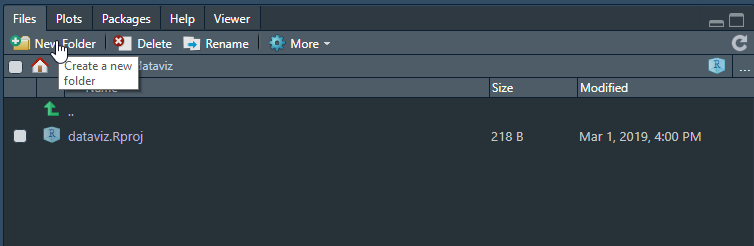

Chapitre 2 Bien commencer
2.2 Créer un projet sous Rstudio pour vous permettre de recenser vos travaux.
Pourquoi travailler avec les projets Rstudio plutôt que les scripts R ?
- Cela permet la portabilité : le répertoire de travail par défaut d’un projet est le répertoire où est ce projet. Si vous transmettez celui-ci à un collègue, le fait de lancer un programme ne dépend pas de l’arborescence de votre machine.
Fini les
setwd("chemin/qui/marche/uniquement/sur/mon/poste")!
- Toujours sur la portabilité, un projet peut être utilisé avec un outil comme
renvqui va vous intégrer en interne au projet l’ensemble des packages nécessaires au projet. Cela permet donc à votre collègue à qui vous passez votre projet de ne pas avoir à les installer et, surtout, si vous mettez à jour votre environnement R, votre projet restera toujours avec les versions des packages avec lesquelles vous avez fait tourner votre projet à l’époque. Cela évite d’avoir à subir les effets d’une mise à jour importante d’un package qui casserait votre code.
Pour activer renv sur un projet, il faut l’installer avec install.packages("renv").
Pour intialiser la sauvegarde des packages employés dans le projet, il faut utiliser
renv::init()
Les packages chargés dans le projet sont enregistrés dans un sous-dossier dédié.
En cours de travail sur le projet, la commande renv::snapshot() permet de faire une sauvegarde, la commande renv::restore() permet de charger la dernière sauvegarde.
Cela permet de se forcer à travailler en mode projet : on intègre à un seul endroit tout ce qui est lié à un projet : données brutes, données retravaillées, scripts, illustrations, documentations, publications… et donc y compris les packages avec
renv.On peut travailler sur plusieurs projets en même temps, Rstudio ouvre autant de sessions que de projets dans ce cas.
Les projets Rstudio intègrent une interface avec les outils de gestion de version Git et SVN. Cela veut dire que vous pouvez versionner votre projet et l’héberger simplement comme répertoire sur des plateformes de gestion de code telle que Github ou Gitlab.
Pour créer un projet :
- Cliquez sur Project en haut à droite puis New Project.

- Cliquez sur New Directory.

2.3 Intégrer vos données
Une bonne pratique est de créer un sous répertoire /data pour stocker les données sur lesquelles vous aurez à travailler.
Vous pouvez le faire depuis l’explorateur de fichier de votre système d’exploitation ou directement à partir de l’explorateur de fichier de RStudio.

Cela marche bien quand on a un seul type de données, mais en général on va avoir à travailler sur des données brutes que l’on va retravailler ensuite et vouloir stocker à part. Si par la suite vous souhaitez avoir des exemples de bonnes pratiques sur comment structurer vos données, vous pouvez vous référer au chapitre data du livre d’Hadley Wickham sur la construction de packages R (tout package R étant aussi un projet !).
2.4 Créer votre arborescence de projet
- Créer un répertoire
/srcou vous mettrez vos scripts R. - Créer un répertoire
/figuresou vous mettrez vos illustrations issues de R.
2.5 Activer les packages nécessaires
Commencer par rajouter un script dans le répertoire /src à votre projet qui commencera par :
activer l’ensemble des packages nécessaires
charger les données dont vous aurez besoin.
## ------------------------------------------------------------------------------## You have loaded plyr after dplyr - this is likely to cause problems.
## If you need functions from both plyr and dplyr, please load plyr first, then dplyr:
## library(plyr); library(dplyr)## ------------------------------------------------------------------------------##
## Attaching package: 'plyr'## The following objects are masked from 'package:dplyr':
##
## arrange, count, desc, mutate, rename, summarise, summarize## The following object is masked from 'package:purrr':
##
## compact## This project is in maintenance mode.
## Core functionalities of `cartography` can be found in `mapsf`.
## https://riatelab.github.io/mapsf/##
## Attaching package: 'ggmosaic'## The following object is masked from 'package:GGally':
##
## happy##
## Attaching package: 'plotly'## The following objects are masked from 'package:plyr':
##
## arrange, mutate, rename, summarise## The following object is masked from 'package:ggplot2':
##
## last_plot## The following object is masked from 'package:stats':
##
## filter## The following object is masked from 'package:graphics':
##
## layout2.6 Bien structurer ses projets data
Plusieurs documents peuvent vous inspirer sur la structuration de vos projets data par la suite.
En voici quelques-uns :
- https://github.com/pavopax/new-project-template
- https://nicercode.github.io/blog/2013-04-05-projects/
- https://www.inwt-statistics.com/read-blog/a-meaningful-file-structure-for-r-projects.html
- http://projecttemplate.net/architecture.html
A partir du moment où quelques grands principes sont respectés (un répertoire pour les données brutes en lecture seule par exemple), le reste est surtout une question d’attirance plus forte pour l’une ou l’autre solution. L’important est de vous tenir ensuite à conserver toujours la même arborescence dans vos projets afin de vous y retrouver plus simplement.